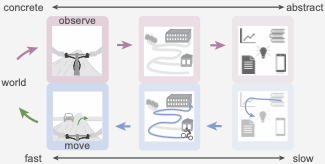
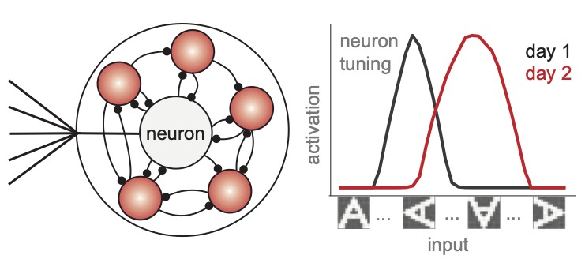
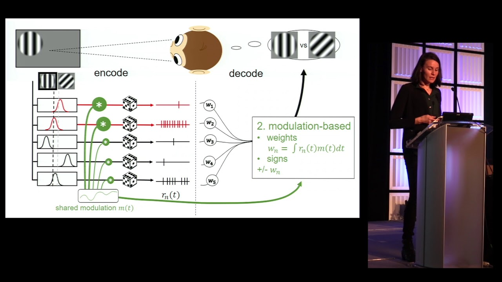

I'm a researcher studying how sensory input is transformed into actions and how action control shapes sensory and cognitive representations in biological and artificial systems. My work combines machine learning with neuroscience to study these questions at the level of both theory and data.
I use statistics and machine learning to study hierarchical representations and task learning in models of natural and artificial intelligence. For my PhD at New York University, I worked jointly with Eero Simoncelli and Cristina Savin on task-modulated and adapted visual processing (NatComm23), with a focus on hierarchical information propagation (NeurIPSWorkshop22) and functional stochastic neural modulation (NeurIPS19).
Currently I am a research fellow at the Champalimaud Centre where I developed models of excitability-driven dynamic representations in biological recurrent networks (with Christian Machens, COSYNE24, preprint), build a framework for learning world models from goal-direction action generation (with Daniel McNamee and Joe Paton, COSYNE25, in prep), studied how control and learning objectives shape multi-area brain computations (with Filipe Rodrigues and Joe Paton, AnnRevNeuro25) and adapting world models for flexible task-behavior through online data augmentation (with Daniel McNamee, NeurIPSWorkshop24).
I enjoy collaborating with people and working in multidisciplinary and diverse environments. Outside of work I love traveling and learning new languages as well as dancing which has been a lifelong passion.
Behavior unfolds across multiple spatiotemporal scales, from fast, direct control loops to slower, abstract planning. While low-level control is rooted in concrete, egocentric state-action mappings, long-term behavioral flexibility often relies on structured representations such as “world models”. However, the origins of these internal reference frames (RFs) – especially how they emerge from interaction with the environment and support concrete actions – remain underexplored. Here, we investigate whether structured world representations can emerge from the need to generate goal-directed behavior directly from high-dimensional sensory observations.
Because organisms are able to sense its passage, it is perhaps tempting to treat time as a sensory modality, akin to vision or audition. Indeed, certain features of sensory estimation, such as Weber's law, apply to timing and sensation alike. However, from an organismal perspective, time is a derived feature of other signals, not a stimulus that can be readily transduced by sensory receptors. Its importance for biology lies in the fact that the physical world comprises a complex dynamical system. The multiscale spatiotemporal structure of sensory and internally generated signals within an organism is the informational fabric underlying its ability to control behavior. Viewed this way, temporal computations assume a more fundamental role than is implied by treating time as just another element of the experienced world. Thus, in this review we focus on temporal processing as a means of approaching the more general problem of how the nervous system produces adaptive behavior.
Data augmentation is a powerful tool for improving generalization in machine learning, particularly in data-sparse regimes and large models. However, its use in biological systems remains poorly understood. We propose a biologically inspired framework for experiential augmentation, where an agent autonomously transforms recent experiences into useful training examples during closed-loop interaction with dynamic environments. A simple timing mechanism—potentially linked to serotonergic signaling—regulates when to learn from augmented experiences to balance generalization, novelty adaptation, and memory preservation. In both gridworld and ProcGen CoinRun environments, augmentations triggered by internal state-prediction errors outperform random augmentations, demonstrating the benefits of timing and biological grounding. This work highlights how real-time, self-regulated augmentation can enhance online learning under uncertainty.
with Franzisco Azevedo, Joseph Paton

In this project we investigate how complex, flexible behavior is enabled by hierarchical representations and parallel learning in corticostriatal circuitry. We use reinforcement learning and control theory together with modular neural network models to explain the representations and the behavior that stems from objectives that span mutliple spatiotemporal scales. In collaboration with experimentalists in the Paton lab, we analyse neural and behavioral data to test our theory-driven models.
with Christian Machens
presented at COSYNE 2024, Bernstein Conference 2023, preprint

Neural computations support stable behavior despite relying on many dynamically changing biological processes. Representational drift (RD) describes changes in neurons' response profile over the timescale of minutes to weeks. Specifically, across many brain areas, neurons change their tuning or even stop/start being active, while population encoding and behavior stays intact. Generally, RD is believed to be caused by changes in synaptic weights. Weight changes impact the population readout and consequently require adaptation of downstream areas to maintain stable function, a costly and non-local problem. Here we propose that much of the observed drift phenomenon can be explained by a simpler mechanism: changes in the excitability of cells without changes in synaptic weights. Fluctuations in excitability due to intrinsic homeostatic properties or neuromodulation can occur at different timescales and change individual neuron’s response gain. Here we show that given recurrent connections, such excitability changes can also change the apparent tuning of neurons while leaving population readouts in downstream areas intact. We use spike coding networks (SCN) to show that the extent of these tuning shifts matches experimentally observed changes and that a general decoder can perform near-optimal across excitability changes. This suggests that experimentally observed decline in decoder accuracy across sessions may be due to overfitting of the decoder to one particular population configuration (i.e. the experimental session it was trained on), while downstream brain areas could maintain accurate behavior through a general decoder.
Here we study how the hierarchical processing of visual information can be fine-tuned to a particular task, without loss of overall, general function. We pretrain neural networks using classic gradient methods and fine-tune them to particular tasks through stochastic gain modulation. This modulation introduces a label of task-information that can be trained to highlight relevant information across several stages of processing. We then use a modulator-dependent readout gain that converts the label of task-information in a gain boost, without the need for additional learning. We show that this mechanism allows fast fine-tuning of networks.
with Douglas Ruff, Marlene Cohen, Cristina Savin, Eero Simoncelli
presented at COSYNE 2018 & 2019, Bernstein 2019 among others

When scientists "decode" information from sensory cortical areas, they typically use statistical models to estimate stimulus information given neural activity. However, these methods are arguably unrealistic models for how the brain propagates information from one brain area to another. A sensory brain area consists of a vast amount of neurons with different tuning properties, so that only few of them carry information about a particular task at hand. The decoding problem consists of finding those few informative neurons among a sea of uninformative cells, and combining their activity appropriately to gain information for a task. In this project, we proposed that functionally-targeted stochastic co-modulation of primary sensory area neurons, can introduce a label of task-information that propagates from one area to another. In a collaboration with experimentalists Dr. Marlene Cohen and Dr. Douglas Ruff, we tested these theories in population recordings in brain area V1 and MT and found evidence for a task-specific information label that connects informative neurons within and across areas.
The hippocampus plays a critical role in episodic memory: the sequential representation of visited places and experienced events. What are the underlying mechanisms that integrate this spatiotemporal information? Single cell activity was recently shown to combine time and distance information; however, it remains unknown whether a degree of tuning between space and time can be defined at the network level. Here, we show that hippocampal CA1 network activity tends to represent a specific combination of space and time at any given moment. Our computational model shows that this shift in tuning can happen under the control of the external drive power. We propose that extrinsic global inputs shape the nature of spatiotemporal integration in the hippocampus at the population level depending on the task at hand, a hypothesis which may guide future experimental studies.
Soapbox Science
Promoting public visibility of diversity in science is fundamental. I participated in
Soapbox Science,
an organization that promotes science and diversity by connecting women and non-binary people in science to the public.
I spoke about visual neuroscience at the FIC.A science festival in Oeiras, Portugal.
Neuromatch Academy
The Neuromatch Academy
is an international, virtual platform that organizes courses for students and researchers across the globe.
I participated in creating and presenting course material on Linear Dynamical Systems and the Kalman Filter.
You can find the tutorial here:
Neuromatch LDS Tutorial
.